Tailleur sur mesure
Élégance sur mesure
Depuis 1985, Maison Verlaine incarne la tradition du tailleur français. Chaque costume est une œuvre d'art, confectionnée avec les plus belles étoffes et un savoir-faire inégalé.
Configurez Votre CostumeLes Collections
Quatre univers, une seule main
 I
Trois-Pièces Classique
Soie bleu minuit
Veste, gilet, pantalon : la silhouette fondatrice de la Maison, coupée dans la rigueur.
Découvrir
I
Trois-Pièces Classique
Soie bleu minuit
Veste, gilet, pantalon : la silhouette fondatrice de la Maison, coupée dans la rigueur.
Découvrir
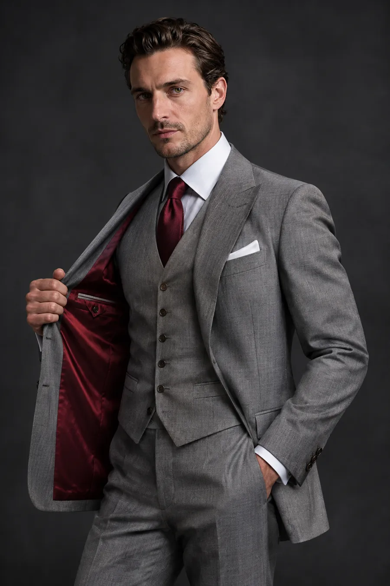
II Trois-Pièces Prestige Soie bordeaux Riviera Revers de soie, doublure signée, boutons de corne : le trois-pièces des grands soirs. Découvrir III
Super Héros
Soie améthyste
Épaule affirmée, taille dessinée, doublure éclatante : l'armure de ville de ceux qui entrent en scène.
Découvrir
III
Super Héros
Soie améthyste
Épaule affirmée, taille dessinée, doublure éclatante : l'armure de ville de ceux qui entrent en scène.
Découvrir
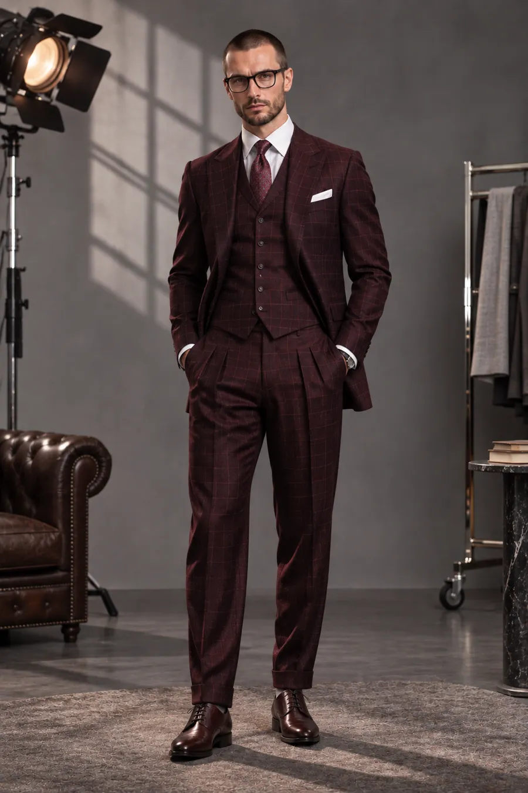
IV Masaï Soie ocre rouge Les rouges et les carreaux du shúkà, traduits en étoffes de tailleur : un hommage, coupé sur mesure. Découvrir Carreaux fenêtreTrois-pièces
Rayures tennisMarine
Carreaux fenêtreTrois-pièces
Rayures tennisMarine
Le Configurateur
Même homme,autre étoffe.
Faites glisser le trait d'or : le costume change, l'homme reste. Dans l'atelier, c'est vous qui tenez la craie, et le prix s'ajuste à chaque choix.
- Étoffe
- Revers
- Boutons
- Doublure
- Monogramme
Aperçu en direct · prix instantané
Les Étoffes
La liasse de la Maison
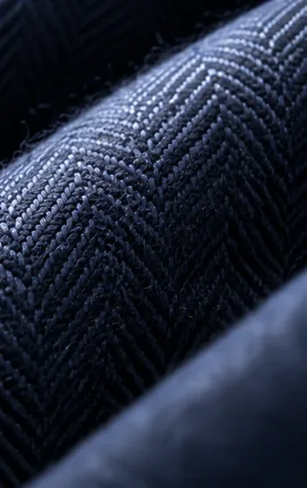
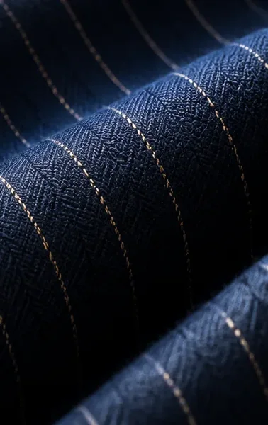
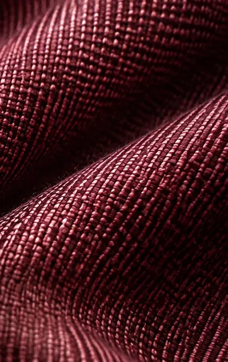
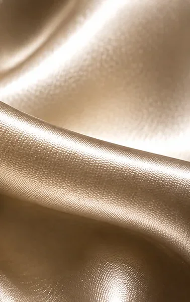
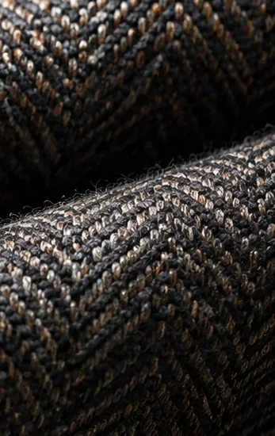
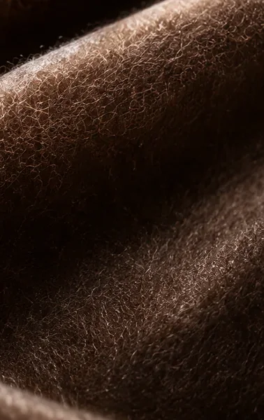
Douceur, tenue et élégance intemporelle.
Finesse et fluidité exceptionnelles.
Légèreté et raffinement estival.
Éclat soyeux, toucher incomparable.
Authenticité et caractère.
Une douceur absolue.
Le Savoir-Faire
Naissance d'un costume, en cinq actes
La Coupe
Tout commence par ce que personne ne verra : la toile, tracée et coupée à la main, selon vos seules proportions.
L'Assemblage
Chemise, gilet, cravate : chaque pièce est montée séparément, puis accordée aux autres, point après point.
La Veste
Les plus belles étoffes des manufactures italiennes et britanniques, doublées de soie, posées sur une épaule qui tombe juste.
La Finition
Boutonnières cousues main, boutons de corne, coutures invisibles. Aucun détail ne nous échappe.
L'Allure
Cinq hommes, cinq étoffes, une même main. Ce qui sort de l'atelier se reconnaît à la démarche.
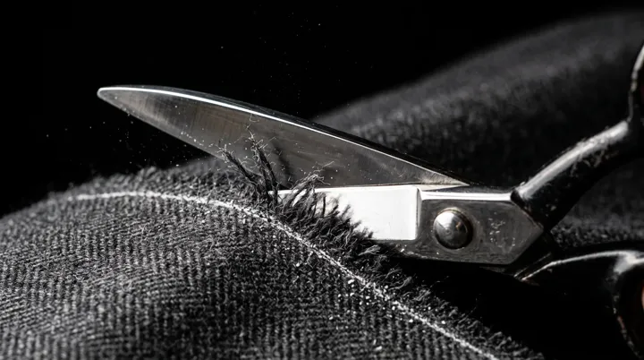
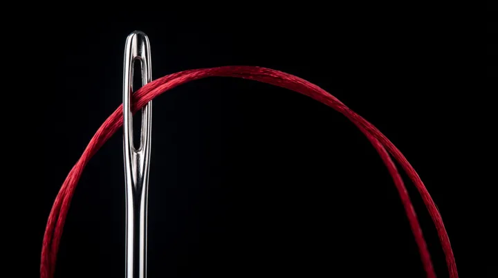
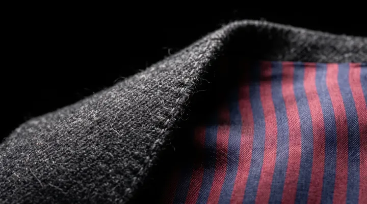
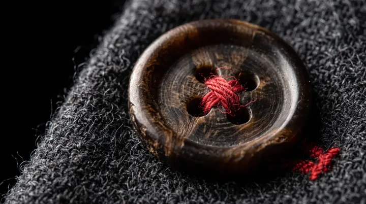
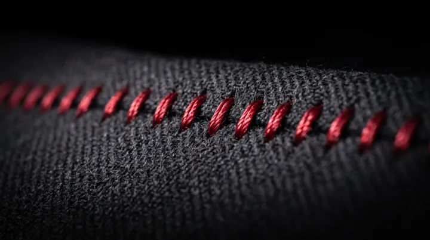
- 1985FondationPierre Verlaine ouvre l'atelier, Paris 7ᵉ.
- 1995ReconnaissanceLa Maison devient un atelier de référence.
- 2010InnovationLa mesure numérique rejoint le geste traditionnel.
- 2024Atelier numériqueLe configurateur ouvre la Maison au monde.
Rendez-vous
Prenonsvos mesures.
- Atelier
- 12 rue de Grenelle
75007 Paris - Téléphone
- +33 (0)1 42 22 12 34
- Horaires
- Lundi – vendredi, 10h – 19h
Samedi, 10h – 18h
Dimanche sur rendez-vous